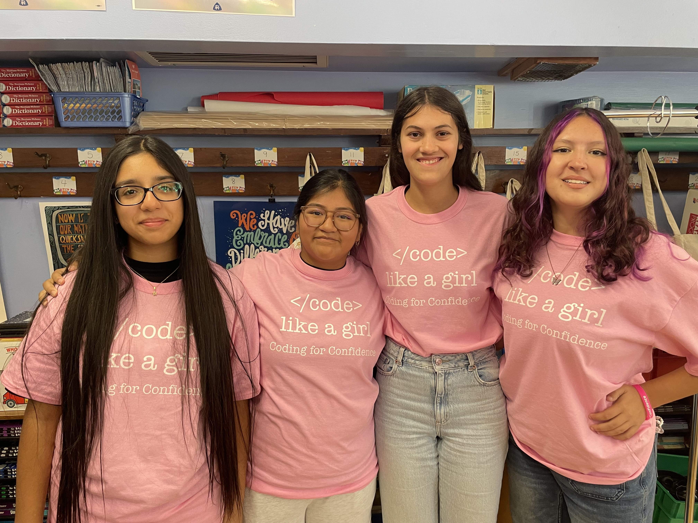
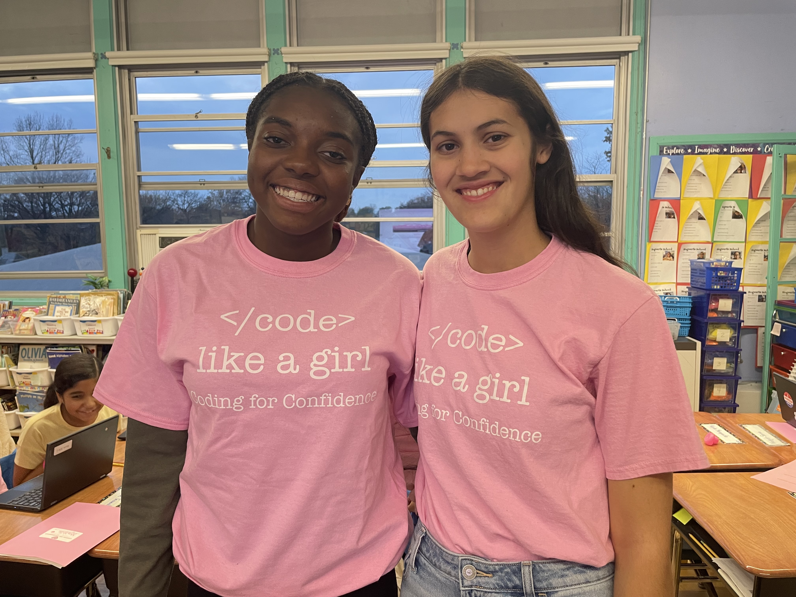
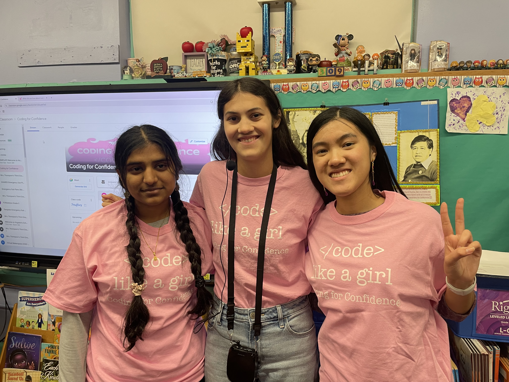

Our Mission
Women are underrepresented in the STEM fields, especially computer science. This is even more pronounced
when intersectionality exists,
such as for women of color or based upon socioeconomic status. Girls lack early experiences and role models
where they see themselves reflected
to encourage them toward this field. A confidence gap exists between genders, which makes it even less
likely for girls to enter the STEM fields
when they are not exposed before middle or high school, or later. My goal is to break down barriers for
girls in
STEM, specifically in computer science. I hope
to give them a positive first experience with computer science, provide positive female role models, and
form healthy and strong female relationships.
Coding for Confidence is a series of computer science workshops leading up to a hackathon. These
activities
are designed to provide positive experiences
for girls before they reach the age when confidence starts to decline. We will begin with team building
activities to develop a community of girls supporting girls,
while developing collaboration and perseverance in solving problems. Participants will be provided a safe
space to take academic risks and learn how to support one
another to work together for the greater good of the team. Then the participants will attend a series of
coding workshops designed to prepare them with the skills
and habits of mind they will need to complete the hackathon challenge. The focus throughout the experience
will be on the process over the product and learning by
working through challenges and learning as much, if not more, from mistakes than from successes.
Participants will learn to collaborate, face challenges with courage,
and apply computer science skills. Participants will learn it is most important
to be brave, but that the goal is not always to be perfect.
This program centers around three main principles:
Coding, Confidence, and Collaboration!



My Team
I'm Julia and this is my 13th year as a Girl Scout. I have earned both my Bronze and Silver Awards,
and Coding for
Confidence is my Gold Award project. I am an advocate for female empowerment through positions on
the Junior Commission
on the Status of Women and Girl Scouts Board of Directors. I am also a student in a high school
computer science program
where I have gained experience with Python, HTML, CSS, JS, SQL, Java, Scheme, and C#.
This project was built from many important aspects of my life. As a student in a
computer science, I have seen all of the value STEM and computer science can
bring. I have learned so
much about problem solving, risk-taking, and even embracing my creative side. However, I have also
seen how girls are often
discouraged from pursuing STEM fields, pushed to become perfectionistic, and avoid risks. This is
why I created Coding for
Confidence and continue to advocate for women.
Many members of my community have made major contributions to this project, a few of whom are
pictured above. I collaborated with fellow troopmembers,
computer science students, and even some of the girls I first mentored in my Silver Award project.
They all serve as incredible role models to the girls in this
program and bring a wide range of expertise to the project. I am so thankful for all of their help!